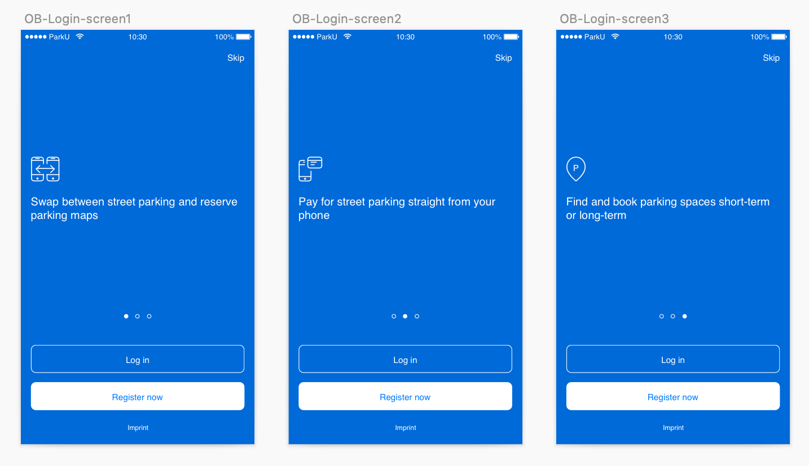
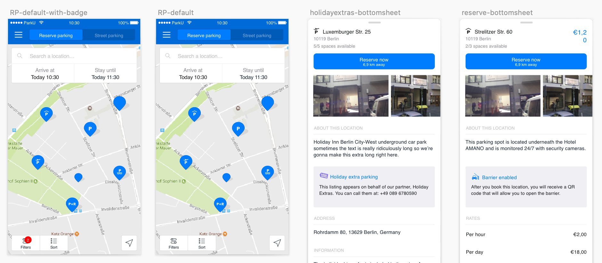
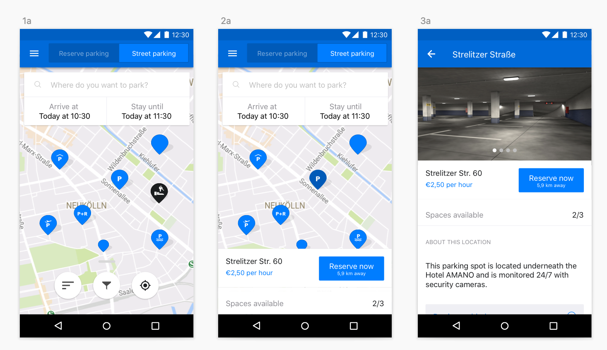
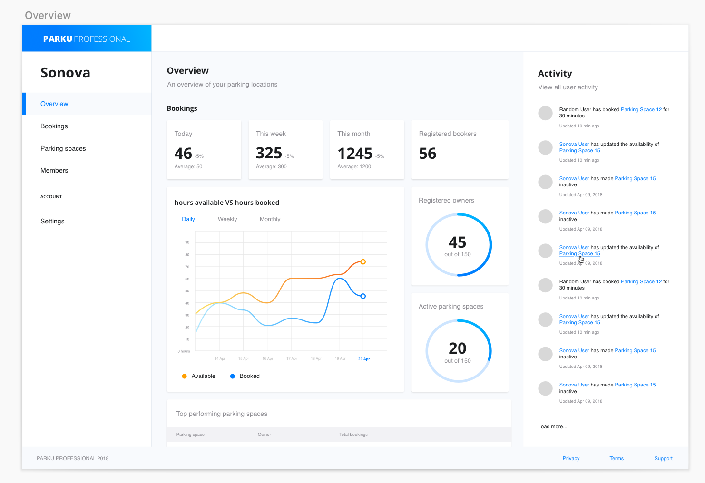
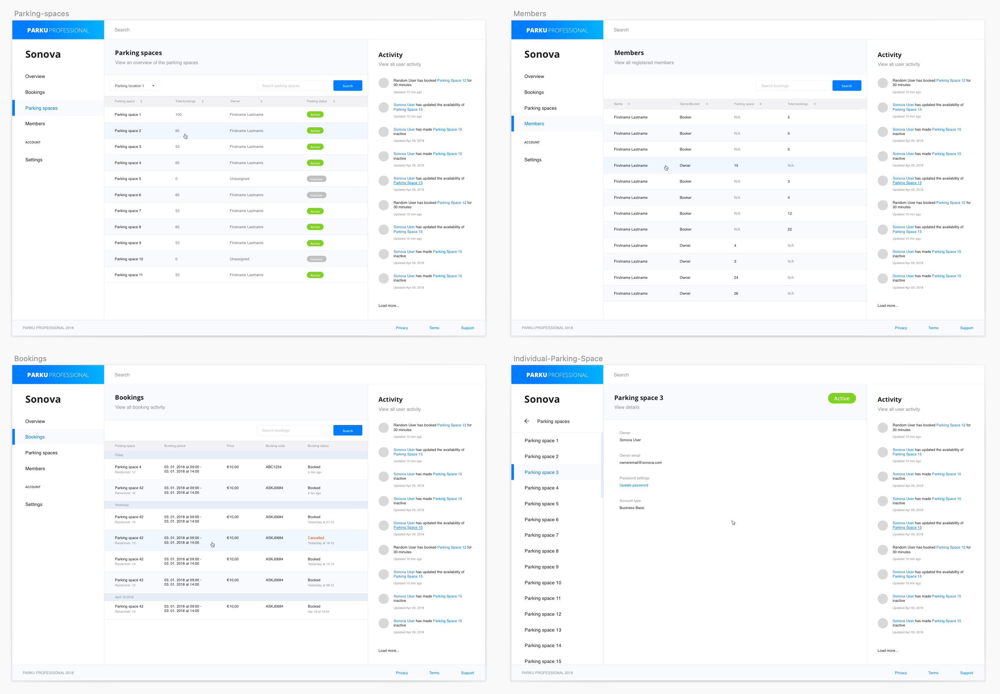

Hello 👋🏻 I'm Rachel and I'm a...
Lead Product DesignerManager
ParkU
**UPDATE 2020** I’ve been informed that ParkU is no longer in operation, so unfortunately you cannot see the work I've done live. I'll try my best to break down the work I did below.
About ParkU
ParkU was a native application for iOS and Android that helped users find parking in the DACH region. In addition to the application, we also had various partnerships with mobility companies and pursued a lot of internal initiatives. ParkU was my entry into Product Management! I started off as a Senior Product Designer, but shortly after I joined, our only PM left the company. So instead of waiting for a new hire, I decided, “Hey, let me do this until you find a replacement!” and worked alongside the Head of Product and Development. I was a PM / Designer hybrid for about 8 months until we hired the right person.
The ParkU app
The primary capability of our application was allowing users to book a parking space directly through their phone. Most of the parking spaces we provided were not owned by us, but owned by third party companies that we did business with. It was a rather popular app in Germany, and we had many active users despite having very little acquisition measures. I wasn’t surprised by this though, because I had worked in the carsharing sector prior to this, and parking was the biggest demand!
Type of users
Although parking is always in demand for larger cities like Berlin, most of our users weren’t your average “Berliner". Essentially, our users were:
- Car owners with regular commutes into the city
- From an older age group (25+)
- On the wealthy side (parking isn’t cheap!)
This resulted in making the branding for ParkU a bit more “fancy” and appeal to this particular audience. We soon introduced a new feature (street-parking) that widened our user base.
The features I worked on
I worked on all the features! But I compiled a few examples of features that had particular bigger challenges and problems to solve. I also revamped their branding and improved the overall UI of the application 🤸🏻♂️.
Reservation parking
Users are able to find available parking spaces to reserve for various periods of time. This was already in place by the time I joined, but I improved the usability of the entire feature.
The primary challenges for this feature was: data collection, bookings and payments. In order for a reservation to take place, users had to provide registration details and payment information. Unlike other registration methods, ParkU required additional personal information such as:
- Phone number (in case something goes wrong)
- License Plate number and Vehicle type (for identification purposes)
Street-Parking integration
Before I joined ParkU, the application only allowed people to reserve parking spaces in dedicated garage spaces. However, we introduced a new feature that let users find available street parking spaces, and pay for it directly on their phone. It certainly came with a variety of constraints and challenges:
- The API we used to determine if a user could park on the street only provided information when we sent an endpoint —> that means we had to create a very unique experience!
- Unlike “reservation” parking, we had to track the user in real-time to gauge the exact amount they pay.
Other ParkU initiatives
ParkU Professional (SaaS)
Since ParkU had a lot of affiliates, we often had various external projects that were handed to us. One of the projects requests came from our partner, Sonova, which is a company that owns a large majority of parking spaces in Germany. They asked us to help them put together a dashboard that allows them to track booking activity of their parking spaces in real-time.
We thought this was a nice opportunity to extend these services to our other partners, so we launched “ParkU Professional” as a SaaS application for parking businesses.
 Back to the homepageWant to get in touch?
- I currently live in Seoul.
- e: mew.aelu@gmail.com